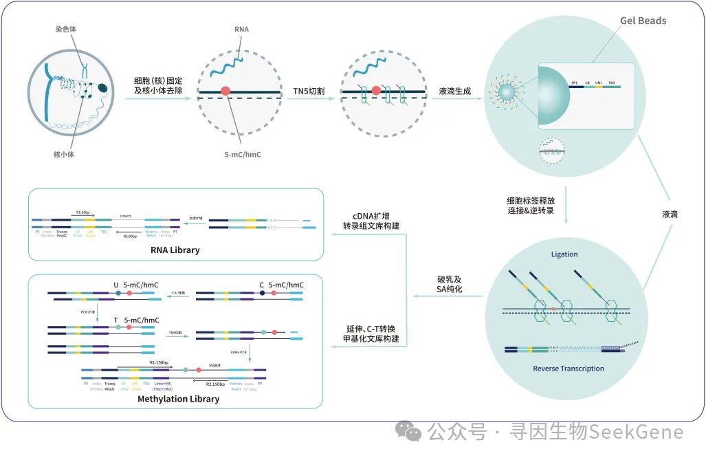
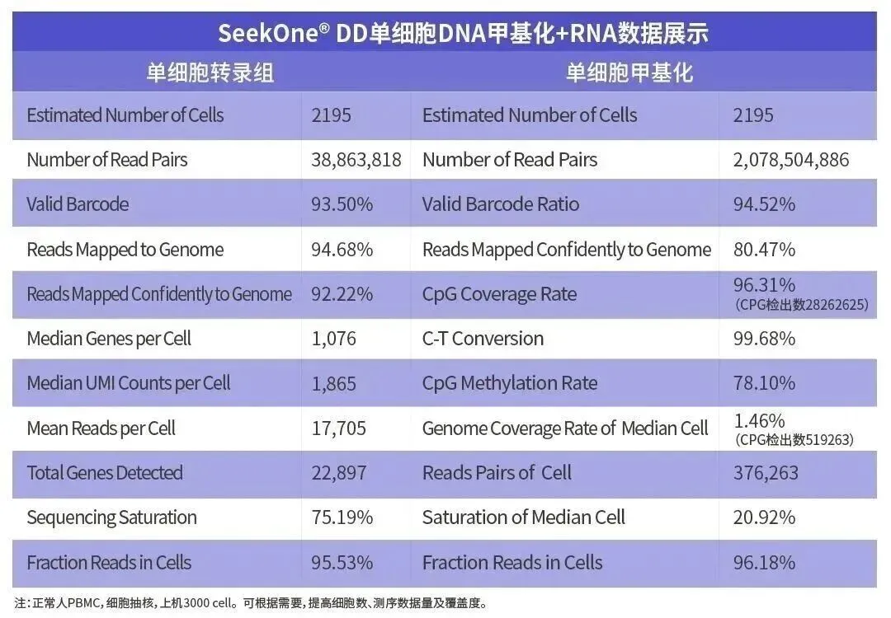
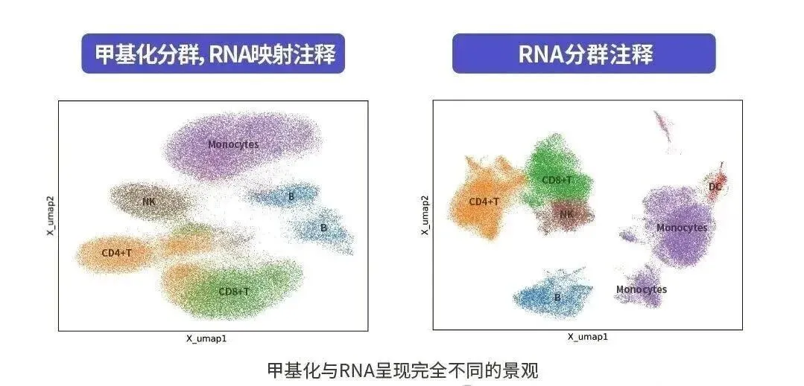
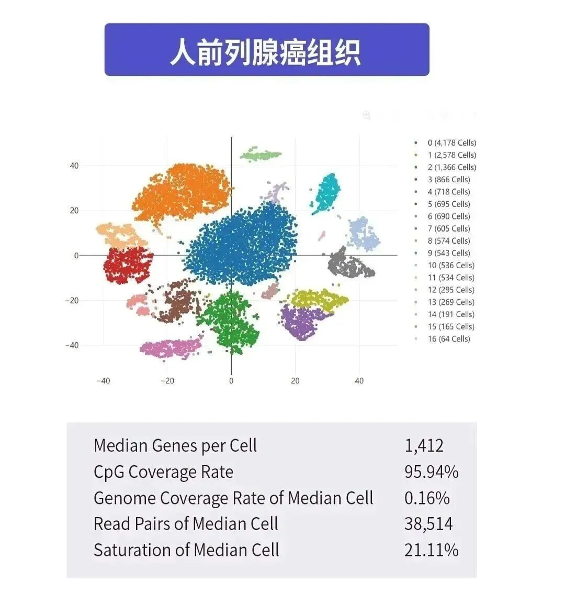
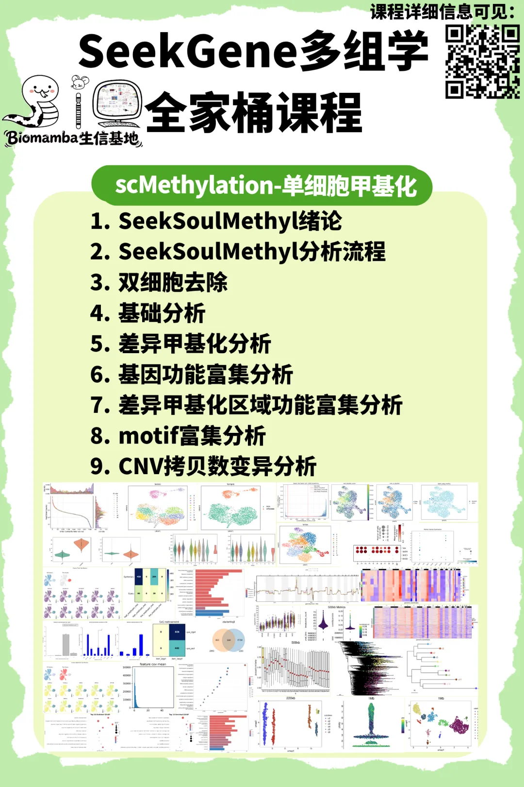
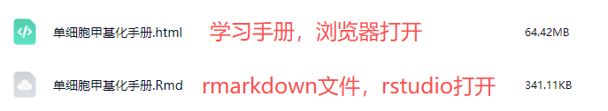
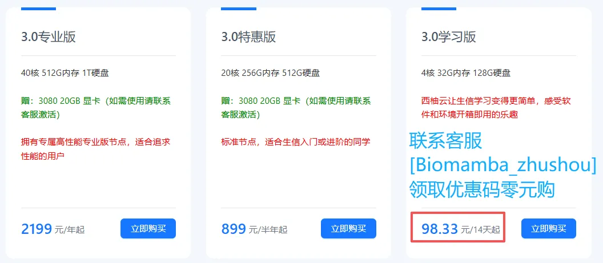
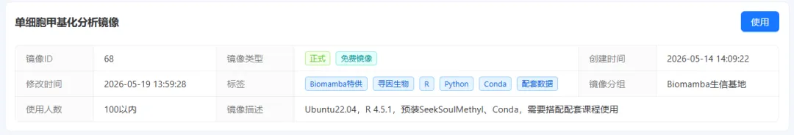

回放已上线！12h掌握SeekGene单细胞甲基化
原文：https://mp.weixin.qq.com/s?__biz=MzAwMzIzOTk5OQ==&mid=2247541876&idx=1&sn=454053fc7add53addcb84f5c48aa75ec&chksm=9b3c5d24ac4bd4321cc2dc114bf4a71e60470d82fa4d1ac3ad3d3b11e8faf2dbb0837028a751#rd 合集：生信基地
单细胞甲基化教学
一、绪论
细胞命运决定由表观遗传景观所精细调控，并在发育、衰老及疾病过程中持续重塑。其中，DNA甲基化（DNA methylation, DNAm）作为核心表观遗传标记，直接参与基因调控网络的建立与维持。然而，DNAm在全基因组范围内的协调调控机制仍未完全阐明。随着测序技术与表观遗传编辑工具的快速发展，人们逐渐认识到DNAm并非孤立运行，而是嵌套在由多层次反馈机制构成的复杂网络中：这些机制既包括局部调控、同源等位基因间相互作用，也涵盖全基因组尺度的协同调控。
这一“表观遗传网络”由多种分子要素共同驱动，包括不同类型的DNA甲基化“写入酶/去除酶”变体；对甲基化状态敏感的转录因子及其他调控蛋白对DNMT（DNA methyltransferases）的招募作用；DNA甲基化与组蛋白修饰之间的交叉调控；三维染色质结构对空间接触的塑造；长链非编码RNA（lncRNA）介导的调控效应；以及可能发生于同源重组过程中的遗传-表观遗传信息整合等。这些机制共同作用，构建出高度动态且相互耦合的甲基化调控网络，从而塑造细胞类型特异性的表观遗传图谱，并影响发育与疾病进程。
尽管我们对DNA甲基化的生物学意义已有较深入认识，但高分辨率、多组学层面的解析仍受限于技术瓶颈。近年来，单细胞甲基化测序技术不断进步，使得在单细胞尺度上解析高质量甲基化图谱成为可能。最新的sciMETv2技术在通量与覆盖度方面显著提升（覆盖度约提升15倍），同时通过优化文库构建流程，避免了对定制引物的依赖，并有效降低了接头污染，使得高质量单细胞甲基化数据的获取更加稳定可靠。
在此基础上，整合单细胞多组学信息以系统性解析“表观遗传—转录—基因组”协同调控关系，已成为当前研究的重要方向。SeekOne® DD单细胞DNA甲基化+转录组一胞多组学技术应运而生。该技术依托成熟的微流控油包水（droplet-based microfluidics）体系，通过Cell Barcode凝胶微珠实现对单细胞核酸分子的特异性捕获，并结合专属连接与建库策略，可在同一细胞内同步构建转录组与DNA甲基化双文库，实现对单细胞层面多维信息的联合解析。

具体而言，该技术能够在无需分样检测的条件下，同时获取单细胞的基因表达信息（转录组）、表观遗传修饰状态（DNA甲基化）、基因组拷贝数变异（CNV）以及免疫功能相关信息（免疫组库），实现“四维一体”的多组学同步解码。这种一体化检测策略不仅显著提升了实验效率与数据一致性，也增强了不同分子层级信息之间的关联分析能力，为系统解析细胞状态转换及其调控机制提供了更为强大的技术支撑。
相较于传统单细胞研究技术，SeekOne®DD凭借独特的技术设计，展现出三大不可替代的核心优势：
- 1、一胞多组全景解析，破解关联研究假阳性难题
技术可同步捕获单个细胞的DNA甲基化（表观调控）、RNA（基因表达）核心信息，同时兼容肿瘤CNV（拷贝数变异）解析，直接建立同一细胞内多维度分子特征的因果关联，解决传统多组学研究中“不同细胞分群关联”导致的假阳性问题，为肿瘤异质性、免疫逃逸、细胞分化等核心机制研究提供更精准的实验证据。

- 2、高通量灵活适配，兼顾珍稀样本与大规模研究
单次实验可灵活调节捕获细胞量（500~12,000个细胞），既能满足临床穿刺样本、珍稀模式生物样本等少量样本的精细分析需求，也能支撑大规模细胞群体的系统性研究，完美适配基础科研、临床转化等多场景应用，为不同领域科研工作者提供定制化解决方案。
- 3、温和酶转技术，守护数据完整性与可靠性
创新采用酶学C-T转换技术，替代传统亚硫酸氢盐化学处理方式，反应条件更温和，可有效减少基因组DNA损伤，显著提升甲基化位点覆盖度与数据完整性，让表观遗传信息的检测更精准、结果更可靠，为后续数据分析与研究结论提供坚实保障。
值得关注的是，SeekOne®DD单细胞一胞多组学技术的核心性能，已通过多项严谨实测数据充分验证。从细胞捕获效率、文库构建成功率，到多维度数据关联性、重复性，均表现出优异的稳定性与可靠性，进一步印证了技术的临床转化价值与科研应用潜力，为全球科研工作者提供了值得信赖的技术工具。


B站：https://www.bilibili.com/video/BV119j36XEph/
抖音：https://v.douyin.com/hjzh9yUNt_4/
小红书：http://xhslink.com/o/8BpkWVvZtTz
视频号：
课程视频包含的内容：

现单细胞甲基化课程回放已制作完毕~，整整12.8h内容，涵盖36个精心录制的课程高清视频(共计14.41GB资源)，专为小白学习者量身打造，可“手把手”的带大家完成单细胞甲基化学习。助你一站式学习单细胞DNA甲基化分析！配套课程专属免费西柚云服务器和镜像，助力大家轻松上手实操！
免费服务器和镜像：学习版服务器(4线程、32GB内存)，包含开箱即用的镜像：单细胞甲基化分析的环境、工具、全部数据。注册地址：https://biomamba.xiyoucloud.net/
交流群：为大家准备了SeekGene多组学全家桶交流群
课程回放资料下载： https://pan.baidu.com/s/178VMmt14Q04kaEFWDB7_VQ（~253.26GB、53372个文件，201个文件夹）
提取码：联系客服[Biomamba_zhushou]领取并添加学习群

SeekGene单细胞甲基化课程
单细胞甲基化学习手册
单细胞甲基化学习手册目录：
零、欢迎关注
课前准备
编程基础
硬件基础
一、绪论二、SeekSoulMethyl分析流程2.1 软件下载和安装2.2 基因组下载2.3 测试数据下载 2.3.1 数据集一 2.3.2 数据集二2.4 参数解读2.5 运行双组学分析（Shell方式） 2.6 运行双组学分析（Nextflow方式） 2.6.1 安装nextflow 2.6.2 准备输入样本表 2.6.3 参数解读 2.6.4 执行定量 2.6.5 报错说明三、双细胞去除3.1 分析结果下载3.2 导入包3.3 方法一：基于转录组细胞类型鉴定的双细胞识别 3.3.1 RNA转录组数据预处理与降维聚类 3.3.2 甲基化组数据预处理与降维聚类 3.3.3 细胞类型标志基因表达分析 3.3.4 细胞UMI计数分布可视化3.4 方法二：基于甲基化Reads数的双细胞识别 3.4.1 每个细胞的甲基化Reads数分布可视化 3.4.2 细胞Reads数相对变化分析 3.4.3 高/低Reads细胞UMAP高亮 3.4.4 综合判定双细胞3.5 方法三：甲基化率鉴定双细胞四、基础分析4.1导入包4.2数据质控 4.2.1 RNA数据质控 4.2.2 甲基化数据质控 4.2.3 RNA和甲基化数据barcode关联、取交集与doublet过滤4.3 单细胞 RNA 测序数据多样本整合分析流程 4.3.1 数据标准化与降维分析 4.3.2 RNA 单组细胞注释4.4 单细胞甲基化测序数据多样本整合分析流程 4.4.1 数据预处理与降维分析 4.4.2 细胞类型注释转移 4.4.3 细胞组成比例 4.4.4 质控指标可视化 4.4.5 质控指标小提琴图可视化五、差异甲基化分析5.1 模块简介 5.1.1 分析内容概览 5.1.2 技术特点5.2 输入文件准备 5.2.1 必需文件 5.2.2 数据预处理要求 5.2.3 导入包 5.2.4 数据加载5.3 差异甲基化区间 (DMB) 分析 5.3.1 在 chrom20k 甲基化水平上合并多样本 MCDS 5.3.2 特征筛选流程 5.3.3 计算甲基化水平并保存 MCDS 数据 5.3.4 差异甲基化区间分析5.4 差异表达基因 (DEG) 分析5.5 差异甲基化基因 (DMG) 分析 5.5.1 在 geneslop2k 甲基化水平上合并多样本 MCDS 5.5.2 差异甲基化基因分析 5.5.3 差异甲基化基因可视化
5.6 多组学关联分析
六、基因功能富集分析
6.1 GO 功能富集分析
6.1.1 函数定义
6.1.2 高表达基因 GO 功能富集分析
6.1.3 高甲基化基因 GO 功能富集分析
6.2 KEGG 功能富集分析
6.2.1 高表达基因 KEGG 功能富集分析
6.2.2 高甲基化基因 KEGG 功能富集分析
七、差异甲基化区域功能富集分析
7.1 rGREAT分析流程简介
7.1.1 关键参数设置
7.2 输入文件准备
7.2.1 输入文件格式
7.2.2 文件结构示例
7.3 快速开始
7.4 可视化
7.5 解放生产力，循环富集每个细胞类型差异差异甲基化区域
7.6 结果解读
八、Motif 富集分析（基于HOMER）
8.1 环境配置
8.2 输入文件准备
8.3 关键参数设置
8.4 HOMER 分析执行
8.5 结果解读
8.5.1 De novo Motif Finding 结果
8.5.2 Known Motif Enrichment 结果
九、CNV拷贝数变异分析 (基于CopyKit)
9.1 模块简介
9.2 输入文件准备
9.2.1 方案 A：直接导入已分析结果 (推荐)
9.2.2 方案 B：从单细胞 BAM 文件开始
9.3 CopyKit 分析流程
9.3.1 关键参数设置
9.4 数据预处理原理
9.5 质量控制
9.5.1 关键质控指标
9.5.2 正常二倍体细胞过滤
9.5.3 离群细胞过滤
9.6 KNN 平滑处理
9.7 聚类分析与亚克隆进化分析
9.7.1 降维
9.7.2 绝对倍性推断
9.7.3 肿瘤亚克隆聚类及克隆进化分析
9.7.4 单细胞水平进化树
9.8 基因水平 CNV 可视化

测试文件，总大小238.85GB
Biomamba生信基地还可以提供
若以上内容学习还不能满足你的科研需求，那可以考虑外卖的三大 全程班：Python版单细胞数据分析、R语言单细胞小白全程班、Python空间转录组全程班，从零基础到实战手把手系统带教，内容详实且有老师答疑解惑。
此外，我们还提供生信热点 全文复现、自测数据个性化分析辅导、实验科研服务和常态化实验学习等增值服务，欢迎联系客服微信 [Biomamba_zhushou] 。
本次课程镜像
1、镜像获取：
西柚云官网注册( https://biomamba.xiyoucloud.net/)、联系客服微信[Biomamba_zhushou]获取学习版服务器的优惠码、零元下单学习版服务器。

激活服务器实例后使用对应镜像，镜像中布置了R 4.5.1，预装SeekSoulMethyl、Conda等本教程所需环境与工具，可以开箱即用的配合此次课程。
** **
2、镜像中包含测试数据、测试脚本、学习手册：
./
├── NotoSansCJKsc-Regular.otf
├── data
│ ├── bp_hsapiens_gene_ensembl_go_genesets_external_gene_name.rds
│ └── granges_hsapiens_gene_ensembl_genes.rds
├── img
├── result
│ ├── DMBs_HOMER
│ │ ├── hg38r.200.cgbins
│ │ ├── hg38r.200.cgfreq
│ │ ├── hg38r.200.gcbins
│ │ ├── hg38r.200.pos
│ │ ├── hg38r.200.seq
│ │ ├── homerMotifs.all.motifs
│ │ ├── homerMotifs.motifs10
│ │ ├── homerMotifs.motifs11
│ │ ├── homerMotifs.motifs12
│ │ ├── homerMotifs.motifs6
│ │ ├── homerMotifs.motifs7
│ │ ├── homerMotifs.motifs8
│ │ ├── homerMotifs.motifs9
│ │ ├── homerResults
│ │ ├── homerResults.html
│ │ ├── knownResults
│ │ ├── knownResults.html
│ │ ├── knownResults.txt
│ │ ├── motifFindingParameters.txt
│ │ ├── nohup.out
│ │ ├── nonRedundant.motifs
│ │ └── seq.autonorm.tsv
│ ├── DMBs_rGREAT
│ │ ├── EpithelialsGO_bubbleplot_GO:BP.png
│ │ ├── Epithelials_GREAT_enrichment_GO:BP_results.txt
│ │ ├── Epithelials_GREAT_enrichment_GO:BP_top10.txt
│ │ ├── Epithelials_GREAT_enrichment_GO:BP_top20.txt
│ │ ├── Epithelials_GREAT_volcano_plot_GO:BP.png
│ │ ├── GREAT_region_gene_associations.png
│ │ ├── TCellsGO_bubbleplot_GO:BP.png
│ │ ├── TCells_GREAT_enrichment_GO:BP_results.txt
│ │ ├── TCells_GREAT_enrichment_GO:BP_top10.txt
│ │ ├── TCells_GREAT_enrichment_GO:BP_top20.txt
│ │ └── TCells_GREAT_volcano_plot_GO:BP.png
│ ├── MDA_bash
│ │ ├── MDA_exp
│ │ │ └── MDA
│ │ │ └── Outs
│ │ └── MDA_methy
│ │ └── step3
│ │ ├── MDA_cells.csv
│ │ ├── allcools_generate_datasets
│ │ └── split_bams
│ ├── WTJW880_bash
│ │ ├── WTJW880_exp
│ │ │ └── WTJW880
│ │ │ └── Outs
│ │ └── WTJW880_methy
│ │ └── step3
│ │ ├── WTJW880_cells.csv
│ │ ├── allcools_generate_datasets
│ │ └── split_bams
│ ├── basic_analysis
│ │ ├── adata_met.h5ad
│ │ ├── adata_met_ann.h5ad
│ │ ├── adata_met_qc.h5ad
│ │ ├── adata_rna.h5ad
│ │ ├── adata_rna_ann.h5ad
│ │ ├── adata_rna_qc.h5ad
│ │ ├── barplot.png
│ │ ├── met_anno.png
│ │ ├── met_leiden.png
│ │ ├── met_percent_cpg.png
│ │ ├── qc_after_violin.png
│ │ ├── qc_met_after_ann_violin.png
│ │ ├── qc_met_after_leiden_violin.png
│ │ ├── qc_met_after_violin.png
│ │ ├── qc_met_violin.png
│ │ ├── qc_violin.png
│ │ ├── rna_anno.png
│ │ ├── rna_gene.png
│ │ ├── rna_gene_violin.png
│ │ ├── rna_leiden.png
│ │ ├── rna_meta.csv
│ │ └── rna_umap.png
│ ├── cnv
│ │ ├── MDA_calcInteger.rds
│ │ ├── MDA_copykit_analysis.rds
│ │ ├── MDA_runMetrics.rds
│ │ ├── SuggestedK_MDA_1Mb.pdf
│ │ ├── SuggestedK_MDA_220kb.pdf
│ │ ├── SuggestedK_MDA_500kb.pdf
│ │ ├── bam_list.txt
│ │ ├── copykit.R
│ │ ├── copykit.log
│ │ ├── copykit_MDA_1Mb.rds
│ │ ├── copykit_MDA_220kb.rds
│ │ ├── copykit_MDA_500kb.rds
│ │ ├── ploidy_score_MDA_1Mb.pdf
│ │ ├── ploidy_score_MDA_220kb.pdf
│ │ ├── ploidy_score_MDA_500kb.pdf
│ │ ├── plotHeatmap_MDA_1Mb_aneuploid.pdf
│ │ ├── plotHeatmap_MDA_1Mbkb_outlier.pdf
│ │ ├── plotHeatmap_MDA_220k_aneuploid.pdf
│ │ ├── plotHeatmap_MDA_220kb_outlier.pdf
│ │ ├── plotHeatmap_MDA_500k_aneuploid.pdf
│ │ ├── plotHeatmap_MDA_500kb_outlier.pdf
│ │ ├── plotHeatmap_consensus_MDA_550kb.pdf
│ │ ├── plotHeatmap_consensus_tree_MDA_1Mb.pdf
│ │ ├── plotHeatmap_consensus_tree_MDA_220kb.pdf
│ │ ├── plotHeatmap_consensus_tree_MDA_500kb.pdf
│ │ ├── plotHeatmap_consensus_tree_MDA_550kb.pdf
│ │ ├── plotMetrics_MDA_1Mb.pdf
│ │ ├── plotMetrics_MDA_220kb.pdf
│ │ ├── plotMetrics_MDA_500kb.pdf
│ │ ├── plotPhylo_cells_MDA_1Mb.pdf
│ │ ├── plotPhylo_cells_MDA_220kb.pdf
│ │ ├── plotPhylo_cells_MDA_500kb.pdf
│ │ ├── plotPhylo_consensus_MDA_1Mb.pdf
│ │ ├── plotPhylo_consensus_MDA_220kb.pdf
│ │ ├── plotPhylo_consensus_MDA_500kb.pdf
│ │ ├── plotUmapMDA_1Mb_keep_c0.pdf
│ │ ├── plotUmapMDA_220_keep_c0.pdf
│ │ ├── plotUmapMDA_220_remove_c0.pdf
│ │ ├── plotUmapMDA_500kb_remove_c0.pdf
│ │ ├── plotUmap_MDA1Mb_keep_c0.pdf
│ │ ├── plotUmap_MDA_1Mb_remove_c0.pdf
│ │ ├── plot_ConsensusLine_MDA_1Mb.pdf
│ │ ├── plot_ConsensusLine_MDA_220kb.pdf
│ │ ├── plot_ConsensusLine_MDA_500kb.pdf
│ │ ├── step1_swap_flags_on_reverse.log
│ │ ├── step2_umi_tools_dedup.log
│ │ └── swapflags_bam_list.txt
│ ├── diff
│ │ ├── DEG.csv
│ │ ├── DEG_DMG.csv
│ │ ├── DMG.csv
│ │ ├── Epithelials.OneVsRestDMB.hdf
│ │ ├── Epithelials.OneVsRestDMG.hdf
│ │ ├── Epithelials.TopDMG.pdf
│ │ ├── Epithelials.TopDMG.png
│ │ ├── TCells.OneVsRestDMB.hdf
│ │ ├── TCells.OneVsRestDMG.hdf
│ │ ├── TCells.TopDMG.pdf
│ │ ├── TCells.TopDMG.png
│ │ ├── chrom20k_cov_mean.chrom20k.png
│ │ ├── chrom20k_cov_mean.geneslop2k.png
│ │ ├── cluster_Epithelials_venn_matrix.png
│ │ ├── cluster_TCells_venn_matrix.png
│ │ ├── dmb_table.bed
│ │ ├── dmb_table.csv
│ │ ├── merge_celltype.OneVsRestDMG.hdf
│ │ ├── merge_chrom20k.OneVsRestDMB.hdf
│ │ ├── merge_chrom20k.mcds
│ │ │ └── chrom20k
│ │ ├── merge_geneslop2k.mcds
│ │ │ └── geneslop2k
│ │ ├── summary_counts.csv
│ │ └── summary_heatmap.png
│ ├── doublets
│ │ ├── MDA_both_rna_methy_doublet.png
│ │ ├── MDA_doublet.txt
│ │ ├── MDA_methy.h5ad
│ │ ├── MDA_methy.png
│ │ ├── MDA_methy_doublet.png
│ │ ├── MDA_methy_leiden.png
│ │ ├── MDA_methy_merged_barcode.png
│ │ ├── MDA_methy_scrublet.h5ad
│ │ ├── MDA_methy_scrublet.png
│ │ ├── MDA_methy_umi.png
│ │ ├── MDA_methy_umi_light.png
│ │ ├── MDA_methy_umi_relative.png
│ │ ├── MDA_rna.h5ad
│ │ ├── MDA_rna.png
│ │ ├── MDA_rna_dotplot.png
│ │ ├── MDA_rna_leiden.png
│ │ ├── MDA_rna_umi.png
│ │ ├── gex_mc_bc_map.png
│ │ ├── read_count.png
│ │ └── rna_meta.png
│ └── enrich
│ ├── DEG_GO_up
│ │ ├── DEG_GO_up.rds
│ │ ├── Epithelials_up_barplot.png
│ │ ├── Epithelials_up_dotplot.png
│ │ ├── TCells_up_barplot.png
│ │ └── TCells_up_dotplot.png
│ ├── DEG_KEGG_up
│ │ ├── DEG_KEGG_up.rds
│ │ ├── Epithelials_up_barplot.png
│ │ ├── Epithelials_up_dotplot.png
│ │ ├── TCells_up_barplot.png
│ │ └── TCells_up_dotplot.png
│ ├── DMG_GO_up
│ │ ├── DMG_GO_up.rds
│ │ ├── Epithelials_up_barplot.png
│ │ ├── Epithelials_up_dotplot.png
│ │ ├── TCells_up_barplot.png
│ │ └── TCells_up_dotplot.png
│ └── DMG_KEGG_up
│ ├── DMG_KEGG_up.rds
│ ├── Epithelials_up_barplot.png
│ ├── Epithelials_up_dotplot.png
│ ├── TCells_up_barplot.png
│ └── TCells_up_dotplot.png
├── 单细胞甲基化手册.Rmd
└── 单细胞甲基化手册.html

欢迎交流

 留一个领取资料、开箱即用的单细胞分析镜像的助手[Biomamba_yunying]，方便各位随时交流。同时我们也构建了交流群矩阵，欢迎大家一起讨论。
留一个领取资料、开箱即用的单细胞分析镜像的助手[Biomamba_yunying]，方便各位随时交流。同时我们也构建了交流群矩阵，欢迎大家一起讨论。 您点的每个赞和在看，我都认真当成了喜欢
您点的每个赞和在看，我都认真当成了喜欢